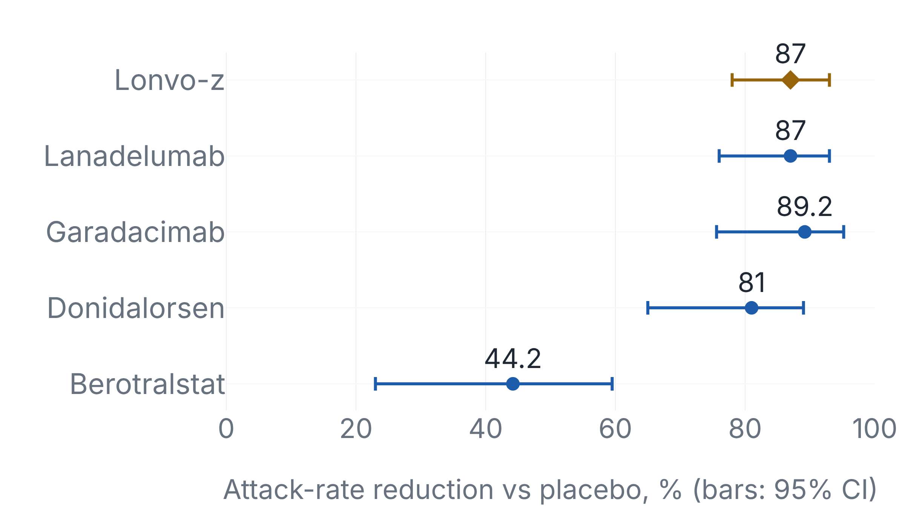
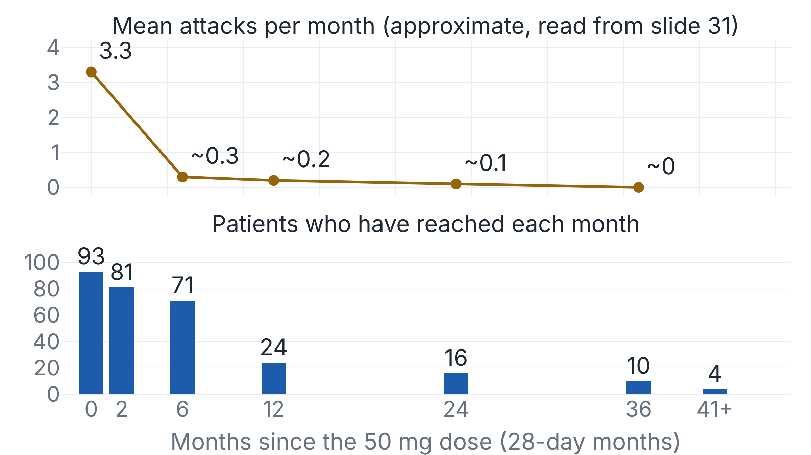

One CRISPR infusion cuts angioedema attacks 87%, as lanadelumab does every two weeks
Intellia's 81% and 89% figures from this month's allergy meeting compare patients with their own earlier attack rates, which leaves one 24-week placebo-controlled result to set beside other drugs.
Intellia reports three percentages, each against a different baseline
Lonvoguran ziclumeran (lonvo-z) is a single intravenous CRISPR gene-editing infusion that inactivates KLKB1, the gene for prekallikrein, in liver cells to treat hereditary angioedema (HAE), a genetic swelling disorder. In the phase 3 trial HAELO, 52 patients given one 50 mg infusion averaged 0.26 attacks a month from week 5 to week 28, against 2.10 for 28 on placebo.1 Intellia's 12 November release for the allergy specialists' ACAAI meeting added an 81% and an 89% reduction.2
Only the first has a control arm.3
Where each drug meets the kallikrein cascade
In HAE from C1 inhibitor deficiency, plasma kallikrein, an enzyme made from prekallikrein, cleaves high-molecular-weight kininogen and releases bradykinin, which causes the swelling.4 Lanadelumab and berotralstat target kallikrein itself, and garadacimab blocks factor XIIa, upstream of it.456 Lonvo-z and donidalorsen cut the supply of prekallikrein, one at the gene and one at its mRNA.27 Sebetralstat, taken during attacks, has no attack-rate endpoint.8
Against placebo, lonvo-z matches lanadelumab and garadacimab
Each pivotal trial's primary endpoint is attacks per month against placebo. Lonvo-z's 87% (95% CI 78 to 93) equals lanadelumab's 87% (76 to 93) at 300 mg every two weeks, and sits inside garadacimab's 89.2% (75.6 to 95.2) in its FDA label.146 The trial's Lancet paper gives 87% (58 to 96).10

| Trial and regimen | Counted window | Patients, drug v placebo | On prophylaxis at entry | Attacks, drug v placebo |
|---|---|---|---|---|
| HAELO lonvo-z 50 mg once | weeks 5 to 28 | 52 v 28 | 71% | 0.26 v 2.10 |
| HELP lanadelumab 300 mg every 2 weeks | days 0 to 182 | 27 v 41 | 56% | 0.26 v 1.97 |
| VANGUARD garadacimab 200 mg monthly | days 1 to 182 | 39 v 25 | 33% | 0.22 v 2.07 |
| OASIS-HAE donidalorsen 80 mg every 4 weeks | weeks 0 to 24 | 45 v 22 | 18% | 0.44 v 2.26 |
| APeX-2 berotralstat 150 mg daily | 24 weeks | 40 v 40 | 75% | 1.31 v 2.35 |
| COMPACT C1-INH SC 60 IU/kg twice weekly | last 14 of 16 weeks | 45, crossover | – | 0.52 v 4.03 |
The comparison is not head-to-head. HAELO counts from week 5, skipping the four weeks in which the infusion lowers plasma kallikrein, while the parallel-group comparators count from the first dose.13 In HAELO, 71% of patients were on prophylaxis at entry and had to stop it before dosing, against 18% to 75% in the comparators that report it.11 Intellia's own slide sets 87% against "44-89%" for approved drugs, footnoted "for illustrative purposes only".3
The 81% and 89% have no placebo arm behind them
The 81% covers the 35 lonvo-z patients in HAELO who were on prophylaxis at entry. Their patient-reported rate in the 90 days before screening, on prophylaxis, was 1.18 a month, against 0.22 in weeks 5 to 28, with no concurrent comparator.3 Against 22 placebo patients in that subgroup, the randomised rate ratio was 0.08 (0.04 to 0.18), a 92% reduction.3 The 81% may read smaller because its baseline was counted on prophylaxis, while the 28 placebo patients, 22 of whom had stopped it, averaged 2.10. No published analysis tests it.
The 89% is the fall from baseline, through up to four years, among 93 patients given 50 mg once in the phase 1/2 trial or HAELO. The release does not say how the trials split or how "overall" was computed. The deck calls its 7.6-month follow-up a median on one slide and a mean on another.23 Of the 93, 24 had reached month 12, 10 month 36 and 4 month 41 (Fig. 3).3

Nex-z's clinical hold and lonvo-z's safety record
Nex-z, Intellia's gene-editing therapy for transthyretin amyloidosis, went on clinical hold a week before a patient died.
-
30 Sep 2025
A MAGNITUDE patient is dosed12
-
24 Oct
Grade 4 liver transaminases and raised bilirubin are reported12
-
27 Oct
Intellia pauses dosing under the trial's criteria12
-
29 Oct
FDA tells Intellia of a clinical hold on both phase 3 trials13
-
5 Nov
The patient dies14
The investigator reported septic shock from a perforated duodenal ulcer, in a course that included acute liver injury. An autopsy supported the diagnoses.
-
27 Jan and 2 Mar 2026
FDA lifts the hold on MAGNITUDE-2, then MAGNITUDE1516
No filing says whether the liver injury contributed to the death. Grade 4 elevations occurred in under 1% of MAGNITUDE patients and none in MAGNITUDE-2, starting 3 to 5 weeks after dosing.14
In HAELO no lonvo-z patient had a serious or grade 3 or worse adverse event through week 28.1 Among the 93 in the integrated set, two had grade 3 events. One was a pulmonary embolism at 12 months in a patient with recent COVID, smoking and obesity, the other a perforated appendix at 22 months that Intellia calls not treatment-related.3 No cited source ties a lonvo-z finding to the nex-z liver events or reports off-target editing or a way to reverse an edit. Intellia's 10-Q warns that the "potentially permanent nature of genome editing effects" may "make these adverse events irreversible".17
Intellia's release calls the edit "intended to permanently lower kallikrein". Its placebo-controlled test covered 24 weeks.123
Sources
- NEJM, HAELO
- Intellia release, 12 Nov 2026
- Intellia investor deck, 12 Nov 2026
- TAKHZYRO label
- ORLADEYO label
- ANDEMBRY label
- DAWNZERA label
- NEJM, KONFIDENT
- HAEGARDA label
- Lancet, VANGUARD
- Intellia 8-K, 27 Apr 2026
- Intellia 8-K, 27 Oct 2025
- Intellia 8-K, 29 Oct 2025
- Intellia 8-K, 9 Jan 2026
- Intellia 8-K, 27 Jan 2026
- Intellia 8-K, 2 Mar 2026
- Intellia 10-Q, 30 Sep 2026